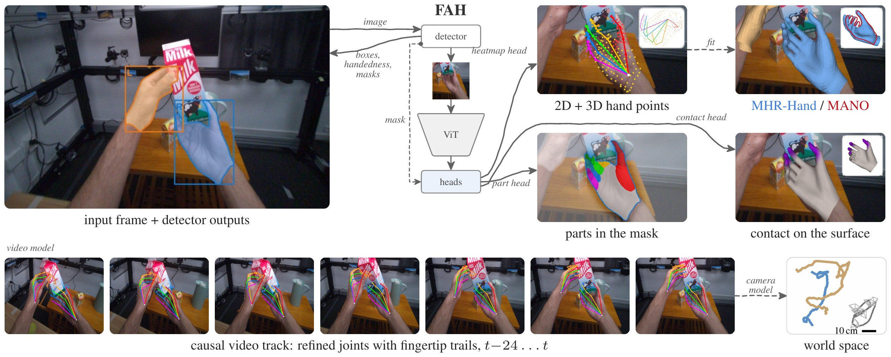
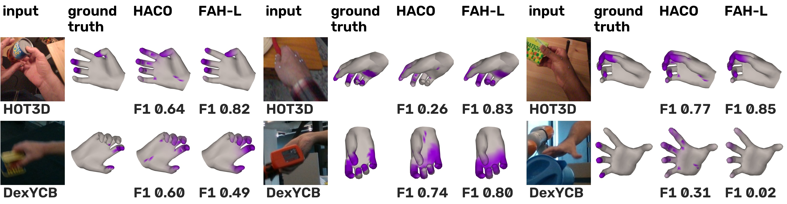
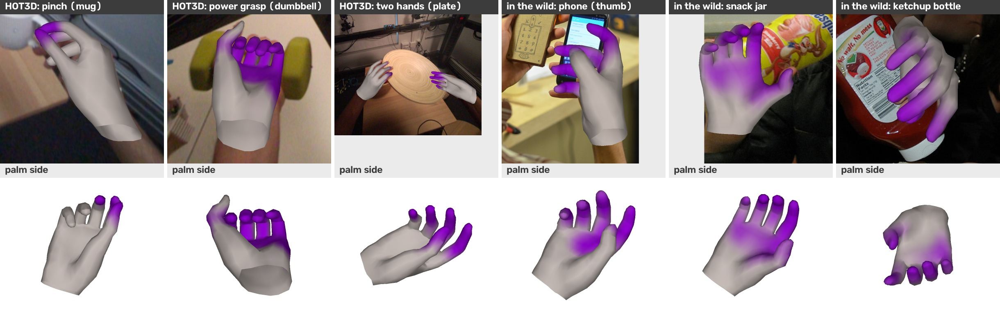
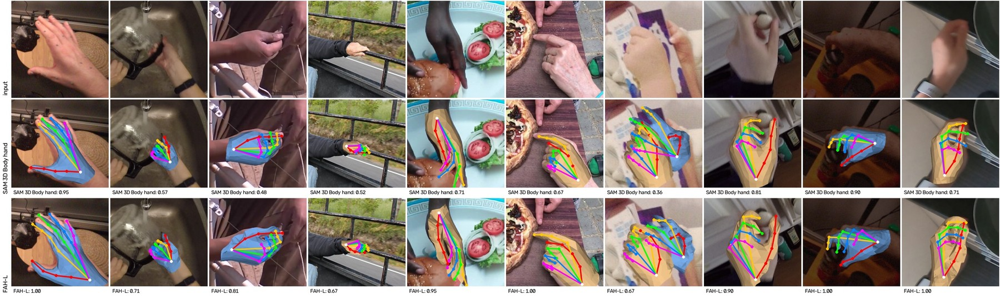

FAH: Fast and Accurate Hand Estimation
in Pixels, Interaction and World Space
Method

Adapted from a frame of a held-out HOT3D benchmark clip (CC BY-SA 4.0); this figure is CC BY-SA 4.0.
In-the-wild test videos (all outputs)
Two of our own videos, full length and without cuts, made with the release’s one-command script (fah-video, see the README): FAH-L with the shipped video preset and every output, hands with confidence ≥ 0.3. Tiles: input | 2D keypoints | 3D hand mesh (the fitted MANO mesh), then hand parts + instance masks | per-vertex contact (grey ≤ 0.3 to violet ≥ 0.7) | the last tile (below), over the per-hand contact timeline (violet bar: the video contact model’s flag; thin pink bar: the image head’s).
Contact vs HACO on the test videos
Comparison with HACO using its paper protocol (2× crop, threshold 0.56). HACO contact is shown on WiLoR’s mesh; FAH-L uses its own fitted mesh. Grey to violet indicates increasing contact probability. Timelines show contact scores and flags; pink marks FAH-L’s image head. HACO flags contact throughout these videos; FAH-L flags 69–95% of object holds and 8–10% of gestures, with more switching. FAH-L can also flag hand-hand or hand-face contact.
Outputs
Contact

Top row: adapted from frames of the held-out HOT3D benchmark clips (CC BY-SA 4.0) and their hand annotations (the ground-truth meshes and contact; CC BY-NC-SA 4.0), so these tiles are CC BY-NC-SA 4.0. Bottom row: adapted from the DexYCB s0 test split (Chao et al., CVPR 2021; CC BY-NC 4.0); CC BY-NC 4.0.
Selected examples from held-out HOT3D benchmark clips, chosen to illustrate (not random samples). Mesh colour = FAH-L per-vertex contact probability (grey at ≤ 0.3 to violet at ≥ 0.7); panel header = hand-level contact flag (FAH-Video). Timeline: FAH-Video contact (violet), the image head alone (pink), ground truth (grey). On HOT3D, the video model switches the contact flag less often (clip 002606); on other datasets the effect differs, see the paper’s contact family table. Limitation: contact can also fire on self-contact (hand-face, hand-hand).

Left to right: tiles 1–3 adapted from frames of the held-out HOT3D benchmark clips (CC BY-SA 4.0; these tiles are CC BY-SA 4.0); 4 “Nadya and Jeff making cellphones” by David Mellis (CC BY 2.0); 5 “Snack Break” by Eden, Janine and Jim (CC BY 2.0); 6 “vincent’s last night in town” by brooke (CC BY-SA 2.0; this tile is CC BY-SA 2.0). Photos 4–6 via COCO train2017, cropped around the hand and overlaid with our mesh render.
FAH-L vs WiLoR / HaWoR on contact juggling
Hands with confidence ≥ 0.3 shown for every method; fps on a desktop RTX 4070 Ti SUPER (FAH-L: the shipped video preset).
All contact juggling footage: KUMA Films (@kumakumafilms). Cropped and overlaid with model predictions.
Head-mounted (egocentric): FAH-L vs WiLoR / HaWoR
HoloLens 2 head-camera video from HoloAssist. Panels: FAH-L (video) | WiLoR | HaWoR, 2D joints (top) and meshes (bottom); hands with confidence ≥ 0.3 shown for every method; fps on a desktop RTX 4070 Ti SUPER (FAH-L: the shipped video preset). On this footage all three methods find a hand in nearly the same frames (92–100%); they differ in the finger poses around the held objects.
Egocentric-10K: factory work, head-mounted fisheye, rectified to a pinhole camera
Every method gets the rectified camera; same panels and threshold as above.
In-the-wild close-ups: FAH-L vs WiLoR / HaWoR
Close-up hand work seen from above and in front (not head-mounted). Panels: FAH-L (video) | WiLoR | HaWoR, 2D joints (top) and meshes (bottom); hands with confidence ≥ 0.3 shown for every method; fps on a desktop RTX 4070 Ti SUPER (FAH-L: the shipped video preset).
Real to sim
FAH-L’s hands (video mode, released model) and the object from SAM 3D Objects, replayed in MuJoCo (supplementary material). Panels: input video | FAH-L hand + reconstructed object | MuJoCo physics (free object, the hand as 16 convex parts). Real to sim on 54 held-out clips (30 DexYCB, 24 HOT3D egocentric), success rule fixed in advance, 3 replays per clip: 7 / 54 pass with the primary controller (joint-space finger closing), 5 / 54 with the Cartesian controller; no egocentric clip passes. Shown: 5 of the 6 clips that pass all 3 replays.
Adapted from DexYCB (Chao et al., CVPR 2021; CC BY-NC 4.0); these videos are CC BY-NC 4.0. Object reconstruction: SAM 3D Objects (Meta). Simulation: MuJoCo.
Results
3D accuracy on HOT3D v1 and EgoStandard
| HOT3D v1 | EgoStandard (held out) | |||||||||||||
|---|---|---|---|---|---|---|---|---|---|---|---|---|---|---|
| method | fps | PA | PA-p | PVE | root | MRRPE | accel | jitter | PA | PA-p | PVE | root | accel | jitter |
| per frame | ||||||||||||||
| MediaPipe Hands | — | 19.61 | 67.01 | — | 87.72 | 119.79 | 20.59 | 20.61 | — | — | — | — | — | — |
| HaMeR | 4.6 | 9.46 | 14.48 | 9.24 | 41.62 | 49.26 | 6.75 | 6.84 | — | — | — | — | — | — |
| Hamba | 5.0 | 9.28 | 14.31 | 9.02 | 40.66 | 47.83 | 7.22 | 7.31 | — | — | — | — | — | — |
| WiLoR | 4.7 | 6.72 | 11.85 | 6.49 | 43.89 | 48.57 | 8.30 | 8.48 | 7.26 | 8.59 | 7.52 | 64.18 | 6.64 | 6.71 |
| SAM 3D Body hand | 10* | 8.30 | — | 8.49 | 40.00 | 52.36 | 5.62 | 5.81 | — | — | — | — | — | — |
| FAH-S | 101 | 5.25 | 5.51 | 4.89 | 11.94 | 16.20 | 5.60 | 5.87 | 7.31 | 7.60 | 7.28 | 30.66 | 5.55 | 5.61 |
| FAH-B | 89 | 4.57 | 4.84 | 4.28 | 9.76 | 13.19 | 4.58 | 4.90 | 7.11 | 7.40 | 7.12 | 30.18 | 4.77 | 4.84 |
| FAH-L | 65 | 4.31 | 4.58 | 4.02 | 8.89 | 12.13 | 3.83 | 4.19 | 7.10 | 7.39 | 7.12 | 30.21 | 3.99 | 4.06 |
| FAH-H | 27 | 4.12 | 4.39 | 3.85 | 9.12 | 11.65 | 3.95 | 4.31 | 7.14 | 7.44 | 7.15 | 28.53 | 3.95 | 4.01 |
| video | ||||||||||||||
| HaWoR | 11 | 5.89 | 14.78 | 5.57 | 29.51 | 27.67 | 1.94 | 2.03 | — | — | — | — | — | — |
| FAH-S video | 88 | 5.08 | 5.28 | 4.80 | 11.59 | 15.70 | 2.24 | 2.45 | 7.35 | 7.50 | 7.30 | 30.75 | 2.14 | 2.14 |
| FAH-B video | 79 | 4.42 | 4.65 | 4.19 | 9.42 | 12.69 | 1.89 | 2.15 | 7.16 | 7.30 | 7.15 | 30.25 | 1.91 | 1.91 |
| FAH-L video | 59 | 4.16 | 4.38 | 3.95 | 8.55 | 11.58 | 1.65 | 1.92 | 7.17 | 7.31 | 7.15 | 30.29 | 1.67 | 1.66 |
| FAH-H video | 26 | 3.98 | 4.19 | 3.77 | 8.34 | 10.72 | 1.66 | 1.94 | 7.20 | 7.35 | 7.18 | 28.84 | 1.65 | 1.63 |
mm; accel and jitter in mm/frame²; PA-p: coverage-aware PA-MPJPE (each missed hand counts as a canonical hand). fps on HOT3D frames on an NVIDIA RTX 4070 Ti SUPER (16 GB) desktop GPU, slower of two rounds; FAH fps end to end (detection, pose, mesh fit, fingertips; optional parts excluded), all four models timed in one session. *Our CUDA-graph implementation (5.9 fps eager). Crop-based baselines use WiLoR’s detector. The four models share data, losses and schedule and differ only in encoder initialisation and input size. EgoStandard: held-out test, aggregate metrics only, scored once per released model and not used to choose among them.
2D accuracy on bench2d v2 and the challenging-pose, low-light and shadow sets
| bench2d v2 | challenging poses | low light | shadows | |||||||||||
|---|---|---|---|---|---|---|---|---|---|---|---|---|---|---|
| method | fps | PCK | incl. | 3D fit | overlap | recall | PCK | incl. | recall | PCK | incl. | recall | PCK | incl. |
| MediaPipe Hands | — | 0.65 | 0.34 | 0.55 | 0.28 | 0.05 | 0.94 | 0.05 | 0.33 | 0.65 | 0.22 | 0.58 | 0.89 | 0.51 |
| RTMPose-m | 89 | 0.71 | 0.40 | — | 0.23 | 0.07 | 0.82 | 0.06 | 0.35 | 0.70 | 0.24 | 0.45 | 0.94 | 0.42 |
| RTMW-l | 32 | 0.68 | 0.65 | — | 0.56 | 0.13 | 0.84 | 0.11 | 0.85 | 0.65 | 0.56 | 0.98 | 0.89 | 0.87 |
| HaMeR | 4.6 | 0.71 | 0.66 | 0.65 | 0.55 | 0.84 | 0.93 | 0.78 | 0.82 | 0.70 | 0.57 | 0.95 | 0.97 | 0.92 |
| Hamba | 5.0 | 0.72 | 0.66 | 0.65 | 0.55 | 0.84 | 0.93 | 0.78 | 0.81 | 0.70 | 0.57 | 0.95 | 0.97 | 0.92 |
| WiLoR | 4.7 | 0.69 | 0.64 | 0.77 | 0.52 | 0.84 | 0.94 | 0.78 | 0.81 | 0.67 | 0.55 | 0.95 | 0.97 | 0.92 |
| FAH-S | 101 | 0.80 | 0.78 | 0.79 | 0.60 | 0.90 | 0.99 | 0.89 | 0.96 | 0.76 | 0.73 | 1.00 | 0.98 | 0.97 |
| FAH-B | 89 | 0.82 | 0.80 | 0.82 | 0.62 | 0.90 | 0.99 | 0.89 | 0.96 | 0.79 | 0.76 | 1.00 | 0.99 | 0.99 |
| FAH-L | 65 | 0.83 | 0.81 | 0.83 | 0.64 | 0.90 | 0.99 | 0.90 | 0.96 | 0.81 | 0.78 | 1.00 | 0.99 | 0.99 |
| FAH-H | 27 | 0.83 | 0.81 | 0.83 | 0.64 | 0.90 | 0.99 | 0.90 | 0.97 | 0.81 | 0.78 | 1.00 | 0.99 | 0.98 |
PCK@0.1 on matched hands; incl.: missed hands count as failures; 3D fit: 3D joints projected at the best-fitting translation; overlap: PCK@0.1 incl. misses on 387 overlapping hands; shadows: the 278 scored hands of shadow_v1. fps as in the 3D table.
Hand contact
| HOT3D | DexYCB s0 | |||||
|---|---|---|---|---|---|---|
| method | F1 | AP | flag | F1 | AP | flag |
| HACO | 0.58 | 0.47 | 0.82 | 0.66 | 0.61 | 0.86 |
| FAH-S | 0.77 | 0.83 | 0.98 | 0.75 | 0.81 | 0.98 |
| FAH-B | 0.79 | 0.85 | 0.98 | 0.76 | 0.82 | 0.98 |
| FAH-L | 0.80 | 0.85 | 0.98 | 0.76 | 0.82 | 0.98 |
| FAH-H | 0.80 | 0.86 | 0.98 | 0.77 | 0.82 | 0.98 |
| full-pipeline detections† | ||||||
| FAH-L, per frame† | 0.80 | 0.85 | 0.98 | 0.76 | 0.81 | 0.98 |
| FAH-L video† | 0.80 | 0.86 | 0.97 | 0.77 | 0.81 | 0.97 |
| rules: distance to the known object mesh | ||||||
| rule: dense points | 0.72 | — | 0.98 | 0.56 | — | 0.95 |
| rule: fitted MANO | 0.65 | — | 0.96 | 0.56 | — | 0.94 |
Training-disjoint HOT3D (5,172 hands, every 5th frame; HACO zero-shot) and DexYCB s0 test (9,506 hands; HACO trains on s0 train): pooled vertex F1 / AP and hand F1 (flag; vertices within 10 mm of or inside the object), ground-truth boxes, validation-calibrated thresholds, one model per size. †Full-pipeline detections (25,431 / 9,319 hand-frames). Rules: distance to the known object mesh (25,378 / 9,225 detected hands). Model selection consulted these evaluation sets; HOI4D, ARCTIC and MOW: the paper’s contact family table and supplement.
Hands in world space
FAH-L’s video hands with the real-time camera model run at 29 fps; with the offline camera mode at 7.1 fps. All camera stages; real time: joints and dense points without mesh fitting, parts or contact; offline: MANO fitting included. Desktop RTX 4070 Ti SUPER, 4 EgoStandard test clips, slower of 2 rounds; real time: streaming frame source, slower of the swap-free runs on this desktop (16 GB RAM; WSL2 VM 14 GB), whose memory is otherwise the limit; two processes are time-sliced on one GPU (no MPS under WSL2). Accuracy: the paper’s world-space table.
Training of the released models
| model | encoder initialisation | input | DexYCB |
|---|---|---|---|
| FAH-S | distilled ViT-S/16 | 320 px | 6.26 |
| FAH-B | distilled ViT-B/16 | 320 px | 5.67 |
| FAH-L | distilled ViT-L/16 | 320 px | 5.40 |
| FAH-H | teacher's own ViT-H+/16 | 448 px | 5.12 |
Shared data, losses and schedule for all four: two 12k-step blocks and 6k steps with the WiLoR targets; teacher inputs at 384 px, student inputs at 256 px; DexYCB: s0 test PA-MPJPE (mm) of the image model. FAH-L (ViT-L at 320 px; model name fah) is the default.
Apple silicon
FAH supports Core ML inference on Apple silicon. See the acceleration guide for export and timing instructions. Pose exports use float32 by default; throughput depends on the model, precision and device.
SAM 3D Body's hand branch vs FAH-L

Left to right: 1 HOT3D benchmark clip-003029 frame 60; 2 EPIC-KITCHENS-100 via HInt, P18_02 frame 5994; 3 New Days via HInt, ND_DJnh5wqcr04 frame 16745; 4 “Luggage and all” by Sally Taylor (CC BY-NC 2.0) via COCO val2017 / COCO-WholeBody; 5 New Days via HInt, ND_YgnSpdJBNtc frame 60601; 6 New Days via HInt, ND_Uh5yhms9Zi4 frame 2991; 7 Flickr photo 7173995615 via COCO val2017 (CC BY-NC 2.0; author page no longer online); 8 EPIC-KITCHENS-100 via HInt, P09_02 frame 6972; 9 HOT3D benchmark clip-002044 frame 110, with our synthetic low light; 10 EPIC-KITCHENS-100 via HInt, P07_101 frame 16822. HOT3D: CC BY-SA 4.0, hand annotations CC BY-NC-SA 4.0; EPIC-KITCHENS-100 (Damen et al.): CC BY-NC 4.0; New Days of Hands (Cheng et al., NeurIPS 2023) frames via HInt (Pavlakos et al.; public test split; no separate frame licence stated); COCO-WholeBody: Jin et al. Overlays are ours.
BibTeX
@misc{cao2026fastaccuratehandestimation,
title = {Fast and Accurate Hand Estimation in Pixels, Interaction and World Space},
author = {Jinkun Cao},
year = {2026},
eprint = {2611.07711},
archivePrefix = {arXiv},
primaryClass = {cs.CV},
url = {https://arxiv.org/abs/2611.07711}
}
Credits
- Teaser: Photo credits (Wikimedia Commons): keyboard, Cangjie6, CC BY-SA 4.0; knitting, Sadarama, CC BY-SA 4.0; pottery, Earthen Potter, CC BY-SA 4.0; Lego, “Playing with Lego bricks” by Nenad Stojkovic, CC BY 2.0; Rubik’s cube, “Rubik cube (345056969)” by theilr, CC BY-SA 2.0. Frames of our held-out HOT3D benchmark clips (HOT3D’s train_aria recordings; Banerjee et al., CVPR 2025), CC BY-SA 4.0. EPIC-KITCHENS-100 frames (Damen et al.) via the HInt test split (Pavlakos et al.), CC BY-NC 4.0. Overlays added by us; each scene is under its source’s licence.
- Method figure and the HOT3D outputs video: adapted from the held-out HOT3D benchmark clips (HOT3D’s train_aria recordings; Banerjee et al., CVPR 2025; CC BY-SA 4.0); both are CC BY-SA 4.0.
- Contact videos 1–4: adapted from held-out HOT3D benchmark clips (CC BY-SA 4.0); their ground-truth contact bars come from HOT3D’s hand annotations (CC BY-NC-SA 4.0), so these clips are CC BY-NC-SA 4.0.
- Contact figure (six held-out hands vs HACO): top row adapted from frames of the held-out HOT3D benchmark clips (CC BY-SA 4.0) and their hand annotations (ground-truth meshes and contact, CC BY-NC-SA 4.0), so these tiles are CC BY-NC-SA 4.0; bottom row adapted from DexYCB (Chao et al., CVPR 2021; CC BY-NC 4.0); CC BY-NC 4.0.
- Contact strip: tiles 1–3 adapted from frames of the held-out HOT3D benchmark clips (CC BY-SA 4.0; these tiles are CC BY-SA 4.0); photos via COCO train2017 (Flickr): “Nadya and Jeff making cellphones” by David Mellis (CC BY 2.0), “Snack Break” by Eden, Janine and Jim (CC BY 2.0) and “vincent’s last night in town” by brooke (CC BY-SA 2.0; that tile is CC BY-SA 2.0); cropped and overlaid with our mesh render.
- SAM 3D Body comparison (per image in its caption): frames of the held-out HOT3D benchmark clips (CC BY-SA 4.0, hand annotations CC BY-NC-SA 4.0); EPIC-KITCHENS-100 frames (Damen et al.) via HInt (Pavlakos et al.), CC BY-NC 4.0; New Days of Hands (Cheng et al., NeurIPS 2023) frames via HInt (public test split; no separate frame licence stated); COCO val2017 / COCO-WholeBody (Jin et al.): “Luggage and all” by Sally Taylor (CC BY-NC 2.0) and Flickr photo 7173995615 (CC BY-NC 2.0; author page no longer online); cropped and overlaid with predictions.
- Real-to-sim videos: adapted from DexYCB (Chao et al., CVPR 2021; CC BY-NC 4.0); CC BY-NC 4.0. Object reconstruction: SAM 3D Objects (Meta). Simulation: MuJoCo.
- All contact juggling footage: KUMA Films (@kumakumafilms). Cropped and overlaid with model predictions.
- Head-mounted videos: HoloAssist (X. Wang et al., ICCV 2023, holoassist.github.io), Community Data License Agreement – Permissive 2.0 (licence text); trimmed, cropped and overlaid with predictions.
- In-the-wild test videos and the HACO comparison videos: the authors’ own videos.
- Factory videos: Egocentric-10K (Build AI, 2025, huggingface.co/datasets/builddotai/Egocentric-10K), Apache License 2.0 (licence text); trimmed, fisheye-undistorted, cropped and overlaid with predictions.
- Close-up videos (Wikimedia Commons): “Knitting demo of two stitches” by Fuzheado (CC BY-SA 3.0; our derived video is CC BY-SA 3.0) and “How to crochet sl st turning into ch” by Bastique (CC BY 4.0), both cropped and overlaid with predictions.
- Other material on this page (text, tables, renders of the authors’ own videos): Apache License 2.0, as the code.
- HoloAssist (Wang et al., ICCV 2023), holoassist.github.io, session R066-15July-ATV-Part2, 39.1–59.1 s; CDLA-Permissive-2.0; modified: cropped and overlaid with predictions.
- HoloAssist (Wang et al., ICCV 2023), holoassist.github.io, session R085-26July-DSLR, 15.0–35.2 s; CDLA-Permissive-2.0; modified: cropped and overlaid with predictions.
- Egocentric-10K (Build AI, 2025), huggingface.co/datasets/builddotai/Egocentric-10K, factory_051 / worker_005, 48.7–68.7 s; Apache-2.0; modified: undistorted, cropped and overlaid with predictions.
- Egocentric-10K (Build AI, 2025), huggingface.co/datasets/builddotai/Egocentric-10K, factory_002 / worker_001, 63.0–83.0 s; Apache-2.0; modified: undistorted, cropped and overlaid with predictions.


.jpg){kind=link}